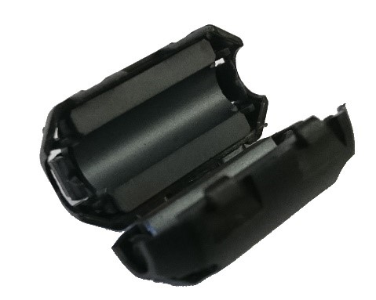

Managing Electrostatic Discharge Effects
Introduction
Electrostatic discharge (ESD) events have the potential to disrupt the normal operation of a competition robot. This section examines causes of ESD events and discusses ways to mitigate the risk that an ESD event will disable or damage a robot’s control system.
Note that this section only provides a brief overview of the physical phenomenon that causes ESD disruptions. You can use the following link to view an in-depth white paper, written by Mr. Eric Chin (a FIRST alumnus and a 2018 summer engineering intern), which examines and quantifies the efficacy of various ESD mitigation techniques:
Special thanks to Doug Chin, Eric Chin, and Greg Szczeszynski for the work they did to model the problems caused by ESD and to evaluate different techniques to mitigate the risk caused by this phenomenon. Also special thanks to FIRST Tech Challenge Teams 2844, 8081, 10523, 10523a, and 10984, and the volunteer team from Arizona (including Robert Garduno, Susan Garduno, Richard Gomez, Matthew Rainey, Christine Sapio, Patricia Strones, and David Thompson) for assisting in testing some of these mitigation techniques under the hot desert sun!
What is an Electrostatic Discharge Event?
An electrostatic discharge (ESD) event occurs when a highly charged conductive object (like the metal frame of a robot) touches an uncharged or oppositely charged conductive object and discharges to it. Because of the high voltages involved (up to tens of kilovolts), ESD events can produce extremely high electrical currents as the charge that was accumulated on one object flows through a conductive path to the neutral or oppositely charged object.
Example of an ESD event, current will flow from the robot to the field wall.
How Robots Become Charged
Consider what happens when you shuffle your feet on a carpet in wool socks and then touch a door knob. You’ll almost certainly get a shock. What causes this phenomenon? When two surfaces interact, there is a small amount of adhesion. This means that they share electrons and if they are made from different materials the electron sharing may be uneven. When the surfaces are taken apart, they can become charged. This is called the triboelectric effect.
Robots become charged due to the triboelectric effect.
A robot’s wheels moving on field tiles build charge on the robot frame just like your wool socks moving on carpet build charge on your body. Many other plastic and rubber materials behave similarly. It is important to note that triboelectric charging takes charge from one object and gives it to another, so the charges are mirrored. In the case of a FIRST Tech Challenge robot, positive charge accumulates on the wheels and negative charge accumulates on the tiles.
Note that a robot with wheels that slide across the soft tiles of a competition field will build electrostatic charge on its frame more rapidly than a robot with wheels that roll across the tiles.
Discharging a Robot
Current “wants” to flow from objects at higher potential to the objects at lower potential to equalize the voltage difference between them and it will if given a conductive path to do so (like an uninsulated wire). In the case of a robotics competition, if a robot is at a higher potential than another metallic object (such as a portion of the game field), an ESD event will occur if the frame of the charged robot contacts the other object.
If the potential difference is high enough, it is also possible for current to flow through the air in the form of an electrical arc. Arcing occurs when the air between two differently charged conductors becomes ionized and allows current to flow from one conductor to the other. Arcs at voltages seen on FIRST Tech Challenge robots can jump air gaps of more than 3/8” (1 cm). Arcs behave almost like direct contact, so they can carry a significant amount of current. Visible sparks go with large electrostatic arcs.
Electric arc between two spheres of opposite charge.
What Steps can be Taken to Mitigate the Risk of an ESD Disruption?
Step 1: Treating the Tile Floor with Anti-Static Spray (Event Hosts Only)
One of the most effective ways to reduce the risk of disruption by ESD events is to treat the tile floors of a competition field with anti-static spray. Anti-static spray increases electrical conductivity of the surface of the tiles. This helps prevent the build-up of electrostatic charge on the robots as the move across the tile floor.
FIRST recommends the use of ACL Heavy Duty Staticide spray to treat the tiles. This spray is extremely effective at preventing charge build up on the robots. Also, this spray only needs to be applied once and it will last for an entire event (and it will work across multiple days).
Note that treating the tile floor is something that only the event host is authorized to do. Teams are not permitted to treat the tile floor themselves.
Step 2: Add Ferrite Chokes to Signal Wires
Ferrite chokes block large changes in current like those seen during an ESD event. This can reduce the risk of damage to or disruption of electrical components when a sensor or other peripheral device receives a shock.
Using ferrite chokes can be a very effective method for mitigating the effects of ESD:
Use USB cables that have built-in or snap-on ferrite chokes.
Install snap-on ferrite chokes onto your signal cables:
Sensor cables
Encoder cables
Servo cables
Step 3: Electrically Isolating the Electronics from the Metal Frame of the Robot
As a robot moves back and forth across the tile floor during a FIRST Tech Challenge match, charge can accumulate on the metallic frame of the robot due to the triboelectric effect. If a charge builds up on the frame of the robot, but the electronics that make up the Control System are at a different voltage, then a shock can occur if an exposed or poorly insulated portion of the Control System gets close (less than 3/8” or 10mm) to the metal frame.
Electrically isolating or insulating the electronics from the frame can help avoid disruptions due to this type of shock.
Sub Step A: Mounting Electronics on a Non-Conductive Material
Mounting the Control System Electronics on a non-conductive material, such as a thin sheet of plywood or a sheet of PVC type A, can help reduce the risk of an ESD event between the frame and the electronics. Using a non-conductive, rigid panel can also help with wire management and strain relieving.
The plywood sheet has holes drilled in it and wires are secured with cable ties to the plywood.
Sub Step B: Isolate Exposed or Poorly Insulated Parts of the Electronics
Certain parts of the Control System’s electronics have exposed metal or are poorly insulated. If these parts are placed too close to the metal frame, a shock can occur if a charge accumulates on the frame.
Electrostatic shocks can occur at poorly insulated or exposed portions of the electronics.
For example, the 4-wire sensor cables that are used by the REV Robotics Expansion Hub have plastic connectors that are poorly insulated. If a charge accumulates on the metal frame of the robot, and the end of sensor cable is placed close to the frame, a shock can occur and this shock can disrupt or even damage the I2C port of an Expansion Hub.
Similarly, some servo extension cables have exposed portions of metal that could be vulnerable to ESD unless properly isolated or insulated.
Moving these vulnerable areas of the electronics system away from the frame (with an air gap greater than 3/8” or 10mm) can help reduce the risk of an ESD disruption.
Keep exposed portions of the electronics away from the frame.
Using electrical tape to insulate these areas can be equally effective and may be easier to implement.
Electrical tape can be used to insulate exposed or poorly insulated metal.
Warning
An ESD event on the USB 2.0 port on the Control Hub can cause Wi-Fi disconnects.
The REV Control Hub has a known ESD issue with devices plugged into the USB 2.0 port. Using the USB 2.0 Port may cause ESD to affect your Control Hub’s Wi-Fi Chip (causing Wi-Fi disconnects with the driver hub).
Ensure that you plug USB devices, such as a Camera, into the USB 3.0 Port on your Control Hub.
Step 3: Covering Exterior Metal Features with Electrically Insulated Material
Another ESD mitigation strategy is to cover exposed portions of metallic frame pieces with an electrically insulating material. Covering the conductive exterior parts of a robot with a non-conductive material reduces the risk that they will touch a conductive object at a different electrical potential and trigger an ESD event. Wooden bumpers, electrical tape, and other non-conductive coatings are all effective.
Insulating portions of the robot that touch other metallic objects on the field can help.
In past seasons, teams who have done this have observed reductions in the frequency and severity of ESD events on their robots.
Step 4: Ground Electronics to Metal Frame with an Approved Cable
Because it is difficult to perfectly isolate the electrical system, it is beneficial to ground the electrical system to the frame of the robot to prevent a potential difference from building up between the frame and the electronics. Doing this can help reduce the risk that a shock can occur between the frame of a robot and the Control System electronics.
The REV Resistive Grounding Strap (REV-31-1269) is an approved grounding cable.
It is important that the grounding only be done using a FIRST-approved, commercially manufactured cable (see the competition manual for the currently approved cables). A FIRST-approved cable has an appropriately sized inline resistor. This resistor is critical because it acts as a safeguard to prevent excessive current from flowing through the frame of the robot if a “hot” (positive) wire of the electronics system is inadvertently short circuited to the frame of the robot. Also, the commercially manufactured grounding cable has a keyed connection, which is designed to prevent a user from inadvertently connecting a hot (12V) line to the frame of robot.
Note that if your team uses Anderson Powerpole connectors, then you will need to use the REV Robotics Anderson Powerpole to XT30 Adapter cable in conjunction with REV Robotics’ Resistive Grounding Strap:
The REV-31-1385 adapter is approved for use with REV’s Resistive Grounding Strap.
To ground the electronics, plug one end of the FIRST-approved cable into a spare XT30 port on the Control System electronics. Then bolt the other end using a conductive (i.e., metal) bolt to the frame of the robot.
Ground the electronics to the frame using a FIRST-approved cable.
It might initially seem contradictory to both insulate the electronic components of the control system from the frame and to also ground the electronics to the frame. However, if the electronics are not grounded to the frame, shocks can occur if a charge builds on the robot frame and an exposed or poorly insulated portion of the electronics (such as the base of a REV Robotics color sensor) gets close it. If the electronics are grounded to the frame, the grounding wire helps keep the electronics at the same potential as the frame, preventing arcs between the two systems.